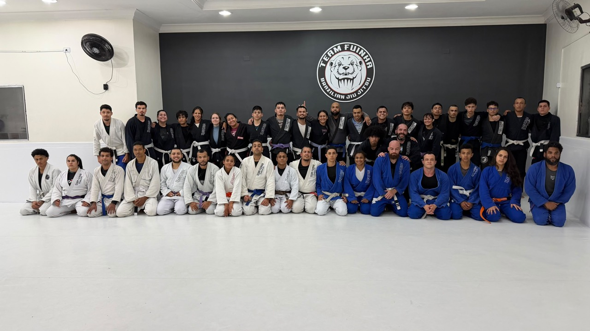
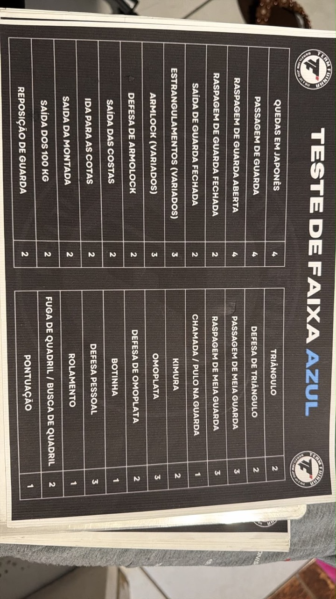

TEAM FUINHA BJJ
Um golpe
de cada vez.
Uma faixa à frente.
Seu roteiro do Team Fuinha BJJ para a faixa azul, organizado para treinar em dupla. Escolha uma técnica, aperte o play e leve o aprendizado para o tatame.
Explorar os golpes ↓ 01 / QUEDAS
01 / QUEDASO-goshi
Uma das 8 quedas do seu roteiro.
NOSSO TATAME, NOSSO OBJETIVO
Team Fuinha BJJ.
A equipe que treina junto e a folha que guia nossa preparação.


SEU EXAME, EM DOBRO
Dois parceiros.
Um roteiro completo.
A quantidade da foto é a base por pessoa. Aqui cada categoria tem o dobro: 4 quedas viram 8, 3 armlocks viram 6 e assim por diante. Os golpes do Bruno e do Rafael ficam separados dentro de cada categoria, com vídeos diferentes para estudar e treinar.
BIBLIOTECA DE TREINO
Uma categoria de cada vez.
Bruno primeiro. Rafael logo abaixo.
Nenhum golpe encontrado. Tente outro nome.
TEAM FUINHA BJJ
A faixa vem com a prática.
Use os vídeos como referência e treine com a orientação do professor.
Nas finalizações, respeitem o tap e soltem imediatamente.
SEU TREINO À MÃO
Leve o Team Fuinha para a tela inicial.
Abra seu roteiro como um aplicativo. Os vídeos precisam de internet.
iPhone ou iPad: abra no Safari, toque em Compartilhar e em “Adicionar à Tela de Início”.
Android ou computador: abra no Chrome ou Edge e procure “Instalar aplicativo” ou “Adicionar à tela inicial” no menu do navegador. Se estiver em um navegador dentro de outro app, abra este endereço no navegador do aparelho.